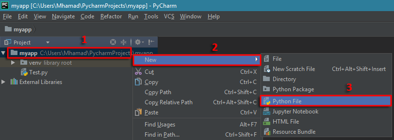
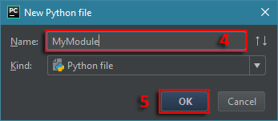
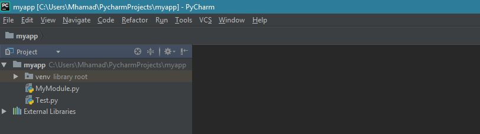
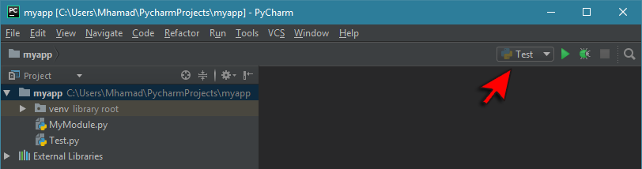
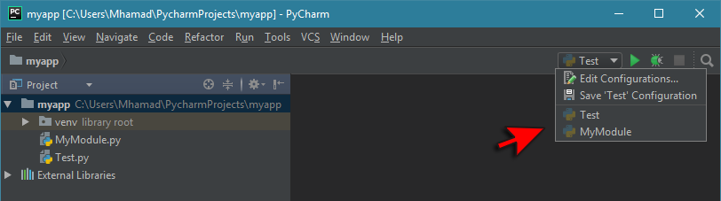

Pythonالتعامل مع الـ Module في بايثون
مفهوم الـ Module في بايثون
كلمة Module يقال لها موديول في العربية, و تعني ملف بايثون عادي يحتوي على مجموعة متغيرات, دوال و كلاسات يمكنك تضمينها في برنامجك.
إذاً أي ملف إمتداده .py يمثل Module في بايثون.
فكرة الـ Module هي جعل الكود متاح لإعادة الإستخدام, حيث أن وضع الكود في ملف خاص يتيح لك نقله و إستخدامه في برامجك كلما إحتجت إليه.
بالإضافة ذلك, فإنها تساعدك في تنظيم مشاريعك, فمثلاً في حال كنت تبني برنامج, موقع أو لعبة إلخ.. فإنك ستجد أن تقسيم المشروع الواحد إلى مجموعة Modules أمر ضروري جداً لأنه سيسهل عليك كثيراً تطويره و صيانته في المستقبل.
طريقة إنشاء Module في بايثون
لإنشاء Module جديد في أي مشروع إتبع الخطوات التالية:
أنقر بزر الماوس الأيمن على إسم المشروع الذي ستنشئ فيه الموديول.
مرر الماوس فوق كلمة New.
أنقر على Python File.

قم بإعطاء الملف أي إسم مثل MyModule.
أنقر OK حتى يتم إنشاء ملف بايثون بهذا الإسم في المشروع.

الآن, لاحظ أنه تم إنشاء موديول جديد بداخل نفس المشروع إسمه MyModule.py.

تحديد الـ Module الأساسي في المشروع في بايثون
في المشروع الذي أنشأناه منذ قليل, نلاحظ أن المشروع أصبح يحتوي على ملفين:
بما أن المشروع أصبح يحتوي على أكثر من ملف, سيكون عليك دائماً الإنتباه للملف الذي سيتم تنفيذ الأوامر الموضوعة فيه عند النقر على زر التشغيل.
طريقة معرفة الموديول الذي سيتنفذ عند النقر على زر التشغيل
بكل بساطة, إسم الموديول الذي سيتنفذ عند النقر على زر التشغيل يظهر بجانبه. فمثلاً, نلاحظ أنه لا يزال الموديول Test هو الموديول الذي سيتنفذ عند النقر على زر التشغيل و السبب بذلك أننا لم نقم بتغييره.

طريقة تحديد الموديول الذي سيتنفذ في المشروع
هناك عدة طرق لذلك, أسهل طريقة هي النقر على القائمة المنسدلة و إختيار الموديول الذي تريده أن يعمل عند النقر على زر التشغيل.

ملاحظة
في كل الأمثلة التي سنضعها في هذا الدرس, سنقوم دائماً بتنفيذ الأوامر الموجودة في الموديول Test.
كما أننا سنقوم بتضيمن محتوى الموديول MyModule في الموديول Test.
تضمين كل محتوى الـ Module في Module آخر في بايثون
في البداية, نستخدم الكلمة المحجوزة import لتضمين محتوى الموديول في موديول آخر.
ملاحظة: إذا فعلت import لنفس الموديول أكثر من مرة, فإن مفسّر لغة بايثون لا يفعل import من جديد.
في المثال التالي قمنا بتعريف موديول إسمه MyModule يحتوي على دالة واحدة, و موديول آخر إسمه Test.
بعدها قمنا بتضمين كل محتوى الموديول MyModule في الموديول Test.
مثال
MyModule.py
def greeting():
print('Welcome to harmash.com')
Test.py
# MyModule هنا قمنا بتضمين كل محتوى الموديول
import MyModule
# MyModule الموجودة في الموديول greeting() هنا قمنا باستدعاء الدالة
MyModule.greeting()
•سنحصل على النتيجة التالية عند تشغيل الموديول Test.
Welcome to harmash.com
إنتبه
إذا فعلت import لكل محتوى الموديول فأنت بذلك كأنك تقوم بإضافة نسخة كاملة عنها في الذاكرة حتى لو كانت تحتوي على 1000 دالة أو 1000 كائن.
لذلك يفضل دائماً أن تفعل import فقط للأشياء التي تحتاجها من الموديول و ليس كل الموديول.
تضمين الأشياء التي نحتاجها فقط من الـ Module في بايثون
لتحديد الأشياء التي نريد إستخدامها فقط من الموديول نضع الكلمة المحجوزة from بعدها نضع إسم الموديول, ثم الكلمة import و بعدها نضع إسم الأشياء التي نريدها من الموديول مع وضع فاصلة بين كل شيئين.
ملاحظة: عند تضمين أشياء من موديول فإننا نذكر أسماءهم فقط في جملة الـ import.
و عند إستخدام الأشياء التي تم جلبها من الموديول فإننا نستخدمها بشكل مباشر بدون الحاجة لذكر إسم الموديول التي أحضرناها منها.
في المثال التالي قمنا بتعريف موديول إسمه MyModule يحتوي على دالتين و كائن نوعه dict.
ثم قمنا بتعريف موديول آخر إسمه Test. في هذا الموديول قمنا بتضمين الأشياء التي نحتاجها فقط من الموديول MyModule.
مثال
MyModule.py
# يتألف من 3 عناصر data إسمه dict هنا قمنا بتعريف
data = {
'id': 5,
'name': 'Sara',
'gender': 'female'
}
# هنا قمنا بتعريف دالة نمرر لها إسم عند إستدعائها فتقوم بطباعة رسالة ترحيب لهذا الإسم
def login_msg(name):
print("Welcome", name)
# هنا قمنا بتعريف دالة نمرر لها إسم عند إستدعائها فتقوم بطباعة رسالة وداع لهذا الإسم
def logout_msg(name):
print('Good by', name)
Test.py
# MyModule فقط من الموديول login_msg() و الدالة data هنا قمنا بتضمين الكائن
from MyModule import data, login_msg
# name في المتغير data الموجودة في العنصر name هنا قمنا بتخزين قيمة المفتاح
name = data['name']
# name و تمرير الإسم الذي نريدها أن تطبعه و الذي في الأساس قمنا بتخزينه في المتغير login_msg() هنا قمنا باستدعاء الدالة
login_msg(name)
•سنحصل على النتيجة التالية عند تشغيل الموديول Test.
Welcome Sara
تضمين كل محتوى الـ Module و استدعاءه بإسمه فقط في بايثون
في حال أردت تضمين كل محتوى الموديول في موديول آخر مع عدم الإضطرار لذكر إسم الموديول كلما أردت إستخدام موجودة فيه, يمكنك أن تضع الكلمة المفتاحية from بعدها نضع إسم الموديول, ثم الكلمة المفتاحية import و بعدها نضع * فقط.
في المثال التالي قمنا بتعريف موديول إسمه MyModule يحتوي على دالتين و كائن نوعه dict.
ثم قمنا بتعريف موديول آخر إسمه Test. في هذا الموديول قمنا بتضمين كل الأشياء الموجودة في الموديول MyModule.
مثال
MyModule.py
# يتألف من 3 عناصر data إسمه dict هنا قمنا بتعريف
data = {
'id': 5,
'name': 'Sara',
'gender': 'female'
}
# هنا قمنا بتعريف دالة نمرر لها إسم عند إستدعائها فتقوم بطباعة رسالة ترحيب لهذا الإسم
def login_msg(name):
print("Welcome", name)
# هنا قمنا بتعريف دالة نمرر لها إسم عند إستدعائها فتقوم بطباعة رسالة وداع لهذا الإسم
def logout_msg(name):
print('Good by', name)
Test.py
# MyModule هنا قمنا بتضمين كل شيء موجود في
from MyModule import *
# name في المتغير data الموجودة في العنصر name هنا قمنا بتخزين قيمة المفتاح
name = data['name']
# name و تمرير الإسم الذي نريدها أن تطبعه و الذي في الأساس قمنا بتخزينه في المتغير login_msg() هنا قمنا باستدعاء الدالة
login_msg(name)
•سنحصل على النتيجة التالية عند تشغيل الموديول Test.
Welcome Sara
تنبيه
يفضل عدم استخدام هذا الأسلوب لأنه قد يسبب لك مشاكل كثيرة أنت بغنى عنها.
فمثلاً في حال قمت باستدعاء أكثر من موديول يحتوون على أشياء تملك نفس الإسم سيحدث تضارب في الأسماء, بالإضافة إلى تشكيل عبئ إضافي على الذاكرة بسبب الأشياء التي قمت بتضمينها و أنت في الأساس لا تحتاجها.
إعادة تسمية الـ Module عند تضيمنها في بايثون
في حال كنت تريد إعطاء إسم آخر ( Alias ) للموديول عند تضمينها لمناداته به بدل مناداته بإسمه الأصلي, فيمكنك ذلك بواسطة الكلمة المفتاحية as.
إذاً, في حال كان إسم الموديول طويل, يمكنك وضع إسم مختصر له بدل الإضطرار إلى كتابة إسمه الكامل كلما أردت الوصول لمحتواه.
في المثال التالي قمنا بتعريف موديول إسمه MyModule يحتوي على دالة واحدة, و موديول آخر إسمه Test.
بعدها قمنا بتضمين كل محتوى الموديول MyModule في الموديول MyModule مع إعطاء الموديول إسم مختصر.
مثال
MyModule.py
def greeting():
print('Welcome to harmash.com')
Test.py
# كإختصار لإسم الموديول 'mod' مع وضع الكلمة MyModule هنا قمنا بتضمين كل محتوى الموديول
import MyModule as mod
# mod الموجودة في الموديول الذي أسميناه greeting() هنا قمنا باستدعاء الدالة
mod.greeting()
•سنحصل على النتيجة التالية عند تشغيل الموديول Test.
Welcome to harmash.com
تضمين Module جاهزة في بايثون
في الدورس السابقة, سبق أن قمنا بتضمين الموديول math الذي يحتوي على دوال و ثوابت جاهزة يمكن الإستفادة منها عند إجراء عمليات حسابية و شرحنا أهم الدوال الموجودة فيه. لذلك سنقوم الآن باستخدام مودويل جاهز آخر إسمه platform.
في المثال التالي قمنا بتضمين مودويل جاهز إسمه platform و من خلاله قمنا بمعرفة كل خصائص الحاسوب الذي نستخدمه.
مثال
Test.py
# platform هنا قمنا بتضمين كل محتوى الموديول
import platform
# هنا قمنا بعرض إسم نظام التشغيل
print('Operating System:', platform.system())
# هنا قمنا بعرض كل المعلومات المتوفرة عن المعالج
print('Processor:', platform.processor())
# هنا قمنا بعرض إصدار بايثون المنصب على الجهاز
print('Python Version:', platform.python_version())
•ستحصل على نتيجة تشبه النتيجة التالية عند التشغيل على حسب مواصفات حاسوبك.
Operating System: Windows
Processor: Intel64 Family 6 Model 142 Stepping 9, GenuineIntel
Python Version: 3.6.4
إستخراج أسماء جميع الأشياء الموجودة في Module في بايثون
لمعرفة جميع أسماء الأشياء الموجودة في أي موديول, يمكنك تمرير إسم الموديول كقيمة للدالة dir() و من ثم طباعة ما سترجعه.
في المثال التالي قمنا بطباعة أسماء جميع الأشياء الموجودة في الموديول math.
مثال
Test.py
# math هنا قمنا بتضمين كل محتوى الموديول
import math
# dir() و التي سترجعها الدالة math هنا قمنا بعرض أسماء جميع الأشياء الموجودة في الموديول
print(dir(math))
•ستحصل على النتيجة التالية عند التشغيل.
['__doc__', '__loader__', '__name__', '__package__', '__spec__', 'acos', 'acosh', 'asin', 'asinh', 'atan', 'atan2', 'atanh', 'ceil', 'copysign', 'cos', 'cosh', 'degrees', 'e', 'erf', 'erfc', 'exp', 'expm1', 'fabs', 'factorial', 'floor', 'fmod', 'frexp', 'fsum', 'gamma', 'gcd', 'hypot', 'inf', 'isclose', 'isfinite', 'isinf', 'isnan', 'ldexp', 'lgamma', 'log', 'log10', 'log1p', 'log2', 'modf', 'nan', 'pi', 'pow', 'radians', 'sin', 'sinh', 'sqrt', 'tan', 'tanh', 'tau', 'trunc']

 محرر الويب
محرر الويب نظام الألوان
نظام الألوان محول الوحدات
محول الوحدات محلل عناوين الشبكات
محلل عناوين الشبكات